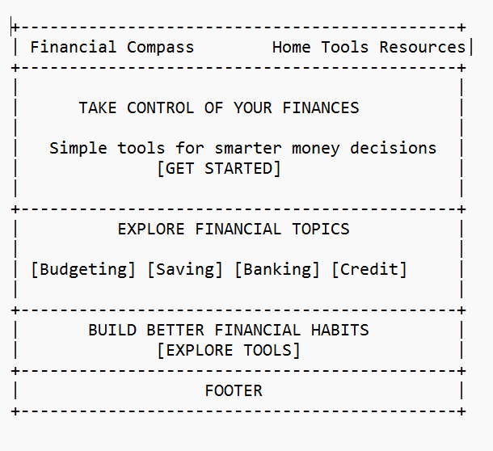
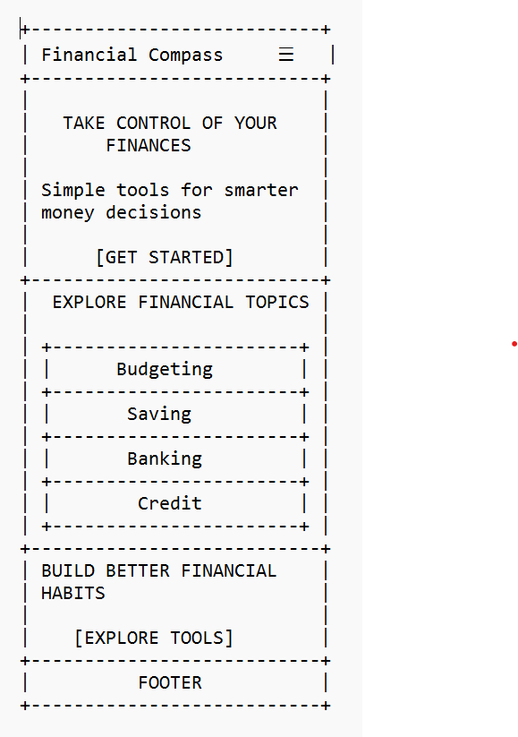

Site Name
Financial Compass
Financial Compass represents the idea of helping young adults find direction when making financial decisions.
Just as a compass helps someone navigate toward a destination, Financial Compass guides users through budgeting, saving, banking, credit management, and financial goal setting.
Proposed domain: financialcompass.org
Site Purpose
Financial Compass is a personal finance education website designed to help young adults develop confidence in managing money.
The website provides practical financial information, interactive budgeting and savings calculators, and accessible learning resources.
Its goal is to make financial education simple, engaging, and relevant to everyday financial decisions.
Scenarios
The following questions represent the needs of the intended audience:
- How can I create a realistic monthly budget using my income and expenses?
- How much should I save each month to achieve a financial goal?
- How do bank accounts, interest rates, and credit products work?
- Where can I find beginner-friendly financial education resources?
Color Scheme
Financial Compass uses a modern color palette designed to appeal to young adults while communicating trust, confidence, energy, and accessibility.
Deep Navy
#14213D
Header, footer, and primary headings. Communicates trust and stability.
Electric Blue
#4361EE
Buttons, navigation highlights, and interactive elements.
Vibrant Teal
#00B8A9
Decorative accents, icons, and financial progress indicators.
Energetic Coral
#FF6B6B
Call-to-action backgrounds, savings goals, and highlights.
Soft Ice
#F4F8FF
Main background and supporting content sections.
Dark Slate
#1F2937
Paragraphs, descriptions, and general body text.
Typography
Roboto - Headings and Navigation
Roboto will be used for headings, navigation links, buttons, and other important interface elements.
Make Money Moves That Matter.
Roboto Medium (500) will be used for navigation and buttons, while Roboto Bold (700) will be used for headings.
Open Sans - Body Content
Open Sans will be used for paragraphs, financial learning resources, descriptions, and form labels.
Financial Compass helps young adults build better financial habits through simple lessons and practical tools.
Open Sans Regular (400) will be used for general content, while Semi-Bold (600) will emphasize important text.
Wireframes
These wireframes illustrate the proposed homepage layout for large and small screens. The wireframes are presented in black and white to focus on structure and layout.
Large View - Desktop

The desktop layout includes horizontal navigation, a prominent hero section, financial topic cards, a call-to-action, and the footer.
Small View - Mobile

The mobile layout features a hamburger navigation menu and vertically stacked financial topic cards.